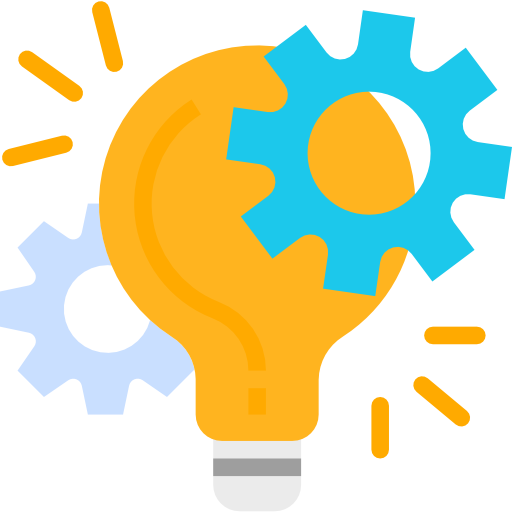

Home
Projects
Internships
LinkedIn
Github
Resume
Projects
Pomodoro Timer Web App
Jan 2021 - Mar 2021
Created a website encompassing the Pomodoro Technique alongside a software engineering team
Contributed through full-stack developement and website design using
Node.js, JavaScript, HTML, and CSS
Tested functions and implemented test coverage using
Cypress
Facilitated communication and teamwork between the development and design teams
Link to code repository
Link to Pomodoro Timer Website
Web Shop
Feb 2021
Constructed a shopping website using
Node.js, JavaScript, HTML, and CSS
Fetched an api consisting of items and created a custom web component to handle such items
Link to code repository
Link to Shop Website
 Home
Home Internships
Internships LinkedIn
LinkedIn Github
Github Resume
Resume